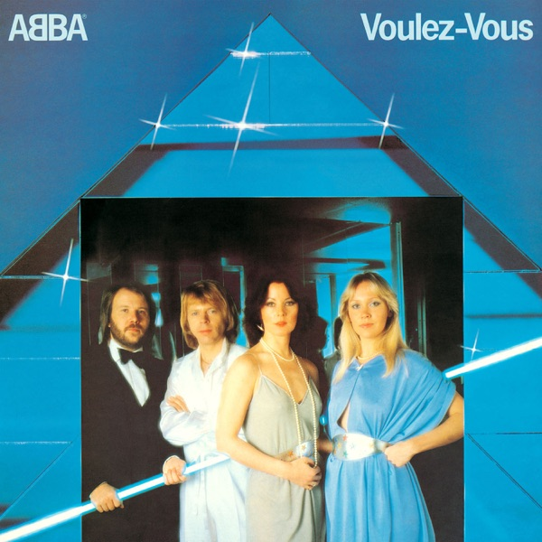
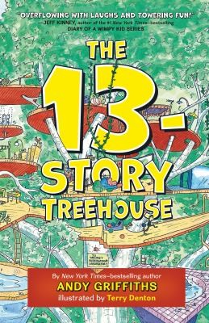
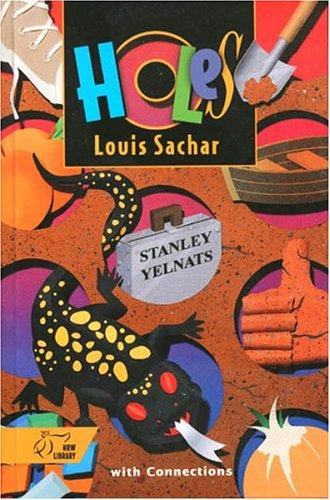
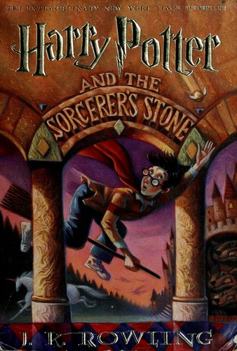
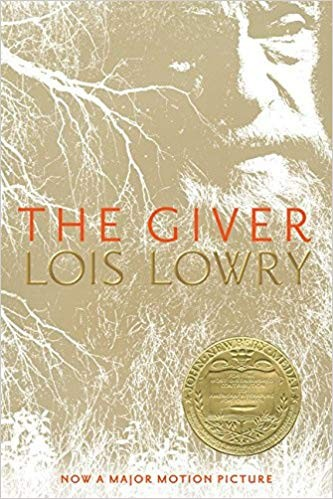

영어교육을 전공한 15년 차 영상 번역가
실리콘밸리 기업에서 일하며 살아 있는 영어를 매일 쓰는 영어 전문가

해외 드라마와 영화의 자막을 15년 넘게 번역해 왔고, 미국 실리콘밸리의 현지화 기업에서 7년 넘게 PM으로 일했습니다. 하루의 대부분을 영어로 읽고, 듣고, 쓰며 보냅니다. 이 영어는 모두 한국에서 익혔습니다. 눈과 귀, 입에 영어를 달고 살았고, 문장을 하나하나 뜯어보며 공부했습니다. 지금도 그렇게 공부합니다. 한국에서 자라는 아이가 어떤 길로 가야 영어가 되는지 몸으로 압니다.
직결영어의 수업은 그 확신 위에 있습니다.
- 수능
- 언어·외국어 영역 만점
- 학력
- 강원대학교 영어교육과 인문대 수석 입학, 학과 수석 조기 졸업
- 자격
- 중등학교 정교사(영어) 2급
- 영어
- 읽기·듣기·쓰기 CEFR C1은 어느 정도인가요?CEFR은 유럽에서 만든 외국어 능력 기준입니다. A1부터 C2까지 여섯 단계가 있고, C1은 위에서 두 번째입니다. 길고 까다로운 글을 숨은 뜻까지 이해하고, 학업과 업무에서 영어를 막힘없이 쓰는 수준입니다. 인증
- 지도
- 고등 전문 과외 5년 (수능, 외고 입시, 영어 특기자 전형 전문)
- 번역
- 글로벌 OTT 플랫폼 영한 자막 15년 이상
- 실무
- 미국 실리콘밸리 현지화 전문 기업 7년 이상
공부한 시간이
점수로도, 실력으로도 남도록
단어 시험에서는 맞혔는데 지문에서는 못 알아보는 영어,
수업에서 들었는데 시험지 앞에서는 떠오르지 않는 영어.
직결영어는 그 사이를 곧게 잇습니다.
단어와 문장
외운 단어는 그날 읽는 지문에서 다시 만나게 합니다. 한영 짝 맞추기 대신 문장 속에서 뜻을 확인하는 시험지로 점검합니다.
수업과 시험
시험 기간에는 학교 교과서와 시험 범위에 맞춰 내신을 준비하고, 그 밖의 기간에는 수능으로 가는 독해와 어법의 기초를 다집니다.
오늘과 미래
탄탄한 기본기를 만듭니다. 언제 어디서도 무기처럼 꺼내 쓰는 영어가 됩니다.
수업은 이렇게 돌아갑니다
멍하니 듣고 끝나는 수업은 없습니다. 매 수업 확인하고, 틀린 것은 다시 확인합니다.
단어 시험으로 시작합니다
종이에 직접 쓰고, 문장 속에서 알맞은 뜻과 품사를 고르는 맞춤 문제로 확인합니다.
지문에서 다시 만납니다
아는 단어가 문장 안에서 어떻게 쓰이는지 눈으로 확인합니다.
백지에 다시 써 봅니다
배운 문법은 빈 종이에 스스로 정리해 봅니다. 스스로 설명할 수 있어야 아는 것입니다.
틀린 것은 다시 시험 봅니다
틀린 단어와 문제는 다음 수업에서 다시 확인합니다. 통과할 때까지 집요하게 파고듭니다.
기록은 학부모님께 공유합니다
시험 결과와 과제는 직결영어 전용 학습 관리 앱에 기록하며, 매 수업마다 학부모님께 공유됩니다.
직결영어와 학습 코드가 맞는 단 1명의 학생을 찾습니다
이런 아이와 잘 맞습니다
- 원서는 잘 읽는데 문법과 쓰기가 약한 아이
- 영어를 꾸준히 해 왔지만 지금 방향이 맞는지 확신이 없는 아이
- 영어유치원이나 어학원을 다녔는데, 이제 중고등 영어가 걱정되는 아이
- 외워야 할 때는 외울 줄 알고, 그럴 마음이 있는 아이
- 설명을 듣고 이해한 뒤 넘어가는 걸 좋아하는 아이
한 번 더 생각해 보세요
- 시험 없이 원서만 읽고 싶은 경우
- 회화 위주의 수업을 찾는 경우
- 숙제와 복습 없이 수업만으로 실력이 오르길 기대하는 경우
- 짧은 기간에 점수만 빠르게 올리고 싶은 경우
학부모님이 먼저 묻는 질문들
누가 가르치나요?
영어 전문가 원장이 직접 1 대 1로 가르칩니다.
수업은 언제 시작하나요?
2027년 2월에 시작합니다. 상담 신청서는 지금 보내 주셔도 됩니다.
상담은 어떻게 신청하나요?
상담은 상담 신청서로만 받습니다. 전화나 방문 문의는 받지 않습니다. 신청서를 보내 주시면 꼼꼼히 읽고 24시간 안에 상담 일정을 안내해 드립니다.
과제는 얼마나 되나요?
아이마다 컨설팅을 통해 과제 분량을 설정합니다. 적정 분량을 꾸준히 이어갈 수 있도록 독려합니다.
아이가 어떻게 하고 있는지 알 수 있나요?
시험 결과와 과제 수행은 직결영어 전용 학습 관리 앱에 기록되고, 수업이 끝나는 대로 학부모님께 곧바로 공유됩니다.
학교 시험 기간에는 어떻게 하나요?
학교 교과서 본문과 어휘, 단원 문법을 정리하고 서술형과 수행평가를 꼼꼼히 준비합니다. 다만, 직결영어의 초점은 당장의 내신 점수 관리가 아닌, 수능과 그 다음 단계의 도구로서의 영어입니다.
레벨테스트는 어떻게 보나요?
30분 동안 단어, 독해, 문법 수준을 확인합니다. 비용은 2만 원이며, 수업에 등록하시면 수업료에서 차감합니다.
결석하면 보강을 하나요?
1 대 1 수업이라 수업료를 회차별로 받습니다. 수업 전날 오후 9시까지 알려 주시면 월 2회까지 일정을 옮겨 드리고, 그 뒤에 알려 주시면 아파서 빠지는 경우도 회차가 차감됩니다. 자세한 내용은 원내 규칙을 확인해 주세요.
시간표와 교육비는 어떻게 되나요?
직결영어의 모든 수업은 1 대 1로 진행되므로 학생과 일정을 논의하여 수업 시간표를 조율합니다. 교육비는 최종 결정된 시간표에 따라 확정됩니다. 수업은 한 번에 2시간, 주 3회를 기준으로 하며 수업료는 12회분씩 미리 납부합니다.
문제집 안에 없는
세상 속 영어를 함께 다룹니다
교재를 한 권 끝낼 때마다 원서, 뉴스, 팝송 등의 실제 영어 콘텐츠를 함께 다룹니다.
문제집 바깥의 생생한 영어야말로 탄탄한 기초가 있어야만 누릴 수 있습니다.
세계 뉴스
BBC, CNN, 뉴욕 타임스 등 세계 언론의 최근 기사를 함께 읽습니다. 관심 분야의 주제 기사를 끝까지 팔로업하며 파고듭니다. 관련 단어를 학습하고 기사를 읽으며, 나의 생각을 말하고 쓸 수 있도록 지도합니다.
팝송
가사가 건전하고 아름다운 곡만 고릅니다. 함께 듣고 따라 부르며 가사의 뜻을 천천히 느껴 봅니다. 시처럼 쓰인 가사를 읽다 보면 영어가 공부를 넘어 즐거움이 됩니다.



영화와 애니메이션
교육적이고 아름다운 영화와 애니메이션의 한 장면을 골라 봅니다. 같은 단어도 장면에 따라 뜻이 달라지는 순간을 아이가 직접 발견합니다. 앞뒤 이야기와 인물의 표정, 목소리로 뜻을 짐작해 보고, 대사를 그대로 따라 말하는 섀도잉으로 구어적 표현들을 익힙니다.


숫자보다 먼저,
아이가 즐길 수 있는 책
초등 5~6학년부터 고등학생까지 읽기 좋은 원서를 AR 지수별로 갖추고 있습니다.
원서는 교과 과정에서 활용하며 원하는 책은 언제든 빌려 볼 수 있습니다.

Dragon Masters
AR 3.1~4.2

Treehouse
AR 3.2~4.3

Holes
AR 4.6 · 뉴베리 1999

Harry Potter
AR 5.5~7.2

The Giver
AR 5.7 · 뉴베리 1994

Sapiens
교양서

상담 신청서로 상담을 신청해 주세요
아이의 영어 수준을 파악하고, 학습 이력과 목표를 바탕으로 맞춤 커리큘럼을 구상합니다.
수업에 등록하시면 수업료에서 차감합니다.